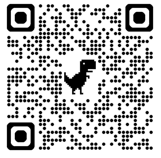

Ing. Ladislav Mariš, PhD.
Assistant Professor
Areas of Expertise: Design of security systems, Software support, Cyber security, Surveillance systems, IT technologies, Artificial Intelligence, Erasmus+ projects, Education.
QR Code - Business Card

Profile Summary
Academic researcher and security engineer specializing in critical infrastructure protection, quantitative risk modeling, converged security, and the integration of Artificial Intelligence (AI) and Information and Communication Technologies (ICT) in security systems. Active coordinator of international research consortia and member of the Competence Center of Cybersecurity UNIZA.
Professional Experience
Scientific Secretary
Department of Security Management, UNIZA | Oct 2023 – Present
- Coordinating scientific research, managing grant scheme participation, and facilitating international academic projects and conferences.
Assistant Professor
Faculty of Security Engineering, UNIZA | Aug 2017 – Present
- Delivering lectures and practical seminars on Video Surveillance Systems (VSS), Alarm Systems, Introduction to IT, Web Technologies, and Programming (Python).
- Leading research in quantitative modeling and AI-driven risk assessment for physical protection systems.
University Researcher
Security Research Department, UNIZA | Aug 2015 – Aug 2017
- Executed scientific-technical tasks focused on security management and critical infrastructure resilience.
Sales Manager & CEO
Markus Capital, s.r.o., Slovakia | Jan 2011 – Aug 2012
- Led business negotiations and operational management.
Education
- PhD. in Security Management | University of Žilina (2012 – 2015)
- Ing. (MSc.) in Security Management | University of Žilina (2009 – 2011)
- Bc. (BSc.) in Security Management | University of Žilina (2006 – 2009)
- Erasmus Study Mobility | Polytechnic Institute of Leiria, Portugal (2008 – 2009)
Selected Research Projects
- V4 ResiCity (International Visegrad Fund): Resilient City Logistics and Supply Chains for Sustainable Competitiveness in the V4 Region. Project Coordinator for UNIZA (2026–2027).
- Erasmus+ DUAL.AI.TEACHer: AI-Powered Teaching and AI Education for Future-Proof Education. Co-investigator (2025–2027).
- APVV-23-0437: Soft target protection strategy and methodology with a focus on elementary, secondary schools and universities. Co-investigator (2024–2027).
- VEGA 1/0257/23: Cyber risk assessment as an essential tool for increasing cyber security in public administration. Co-investigator (2023–2025).
- APVV-20-0457: Monitoring and tracing of movement and contact of persons in medical facilities. Co-investigator (2021–2024).
- Erasmus+ MISCE: Mechatronics for Improving and Standardizing Competences in Engineering. Co-investigator (2022–2025).
Selected Publications
- Mäkká, K., Šiser, A., Mariš, L., & Kampová, K. (2024). Impact of Filling Stations: Assessing the Risks and Consequences of the Release of Hazardous Substances. Applied Sciences, 14(1), 22. DOI: 10.3390/app14010022
- Loveček, T., Mariš, L., & Petrlová, K. (2023). Use Case of Water Reservoir Protection as a Critical Infrastructure Element in Slovakia Using a Quantitative Approach. Water, 15(15), 2818. DOI: 10.3390/w15152818
- Loveček, T., Boroš, M., Mäkká, K., & Mariš, L. (2023). Designing of Intelligent Video-Surveillance Systems in Road Tunnels Using Software Tools. Sustainability, 15(7), 5702. DOI: 10.3390/su15075702
- Mariš, L., Zvaková, Z., Kampová, K., & Loveček, T. (2021). The Influence of Threat Development on the Failure of the System's Symmetry. Systems, 9(4), 74. DOI: 10.3390/systems9040074
(Author of over 100 scientific publications and over 380 citations in Google Scholar>)
Technical Skills & Further Education
Programming & IT: Python (Data Processing, Object-Oriented, Standard Library), C#, HTML, CSS, JavaScript, PHP, MS Power BI.
System Design: AutoCAD, SketchUp, IP Video System Design Tool (JVSG), CAD tools for security systems.
Languages: Slovak (Native), English (B2), Czech (C2), German (A2).
Recent Certifications:
- Python III - Standard Library & Common Programmer Tasks (IT Learning Slovakia, 2026)
- IPBeja Erasmus Week - Training Mobility (Polytechnic Institute of Beja, Portugal, 2025)
- The Fun of Coding - Computational Thinking (Erasmus+ Course, Split, Croatia, 2024)
- Data Protection and Cybersecurity (Youth Power, 2023)
Editorial & Academic Service
- Editorial Board Member: Crisis Management (Krízový manažment) Journal (Technical Board)
- Active Peer Reviewer: MDPI Journals (Applied Sciences, Sensors, Sustainability, Electronics, Systems) – Certified MDPI Reviewer
- International Committee Board: IBIMA International Conferences (Cordoba & Seville, Spain)
- Grant Evaluator: Expert Evaluator for the Cultural and Educational Grant Agency (KEGA), Ministry of Education, Slovakia